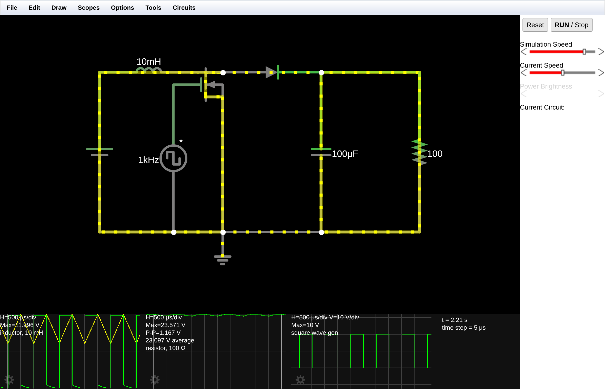
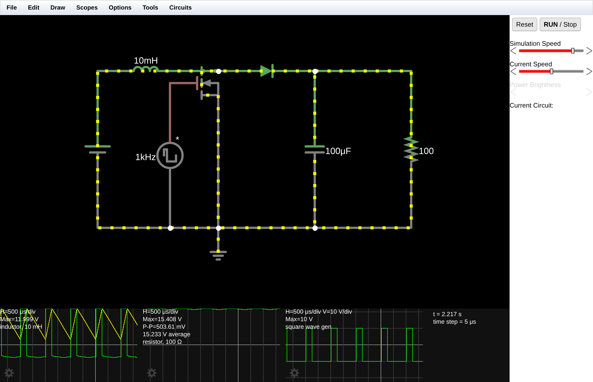
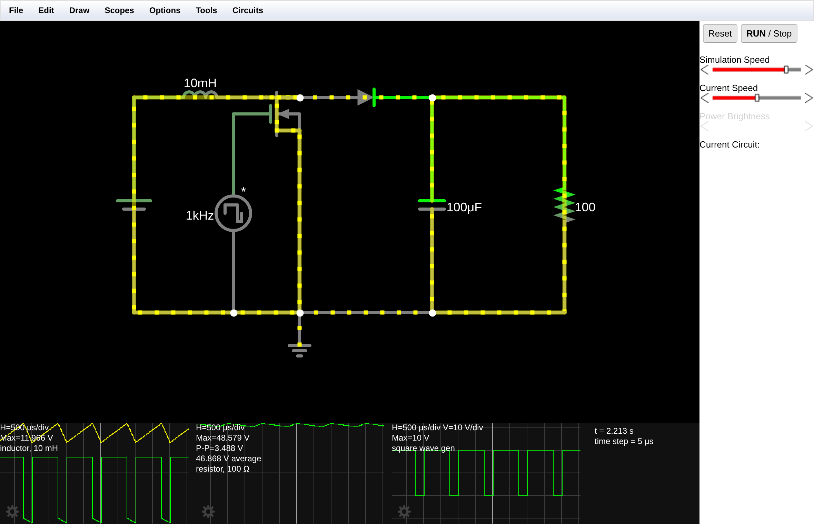
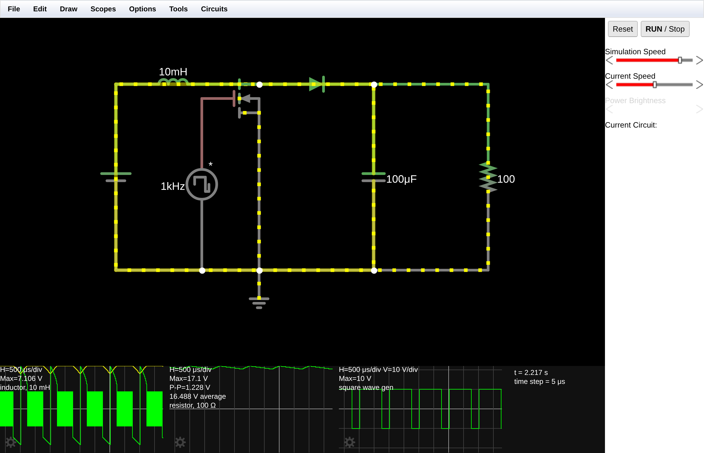
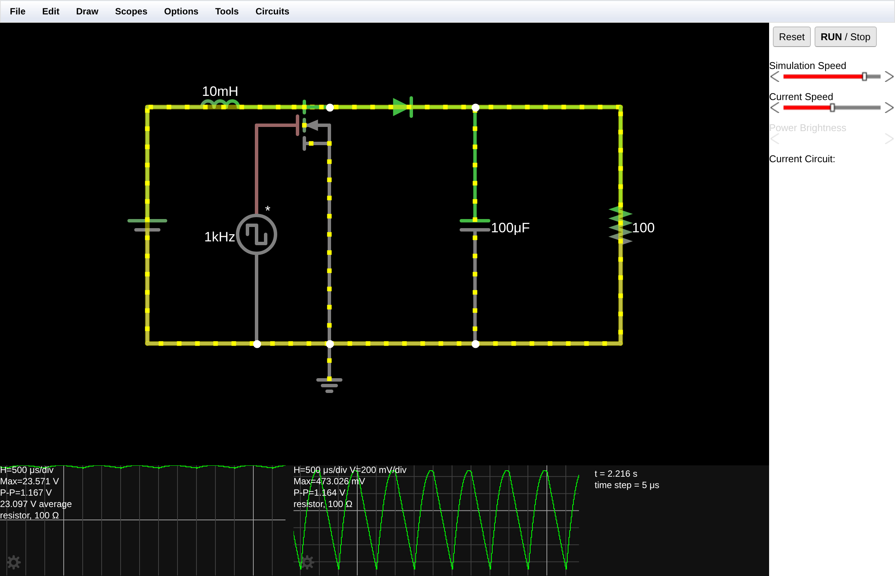
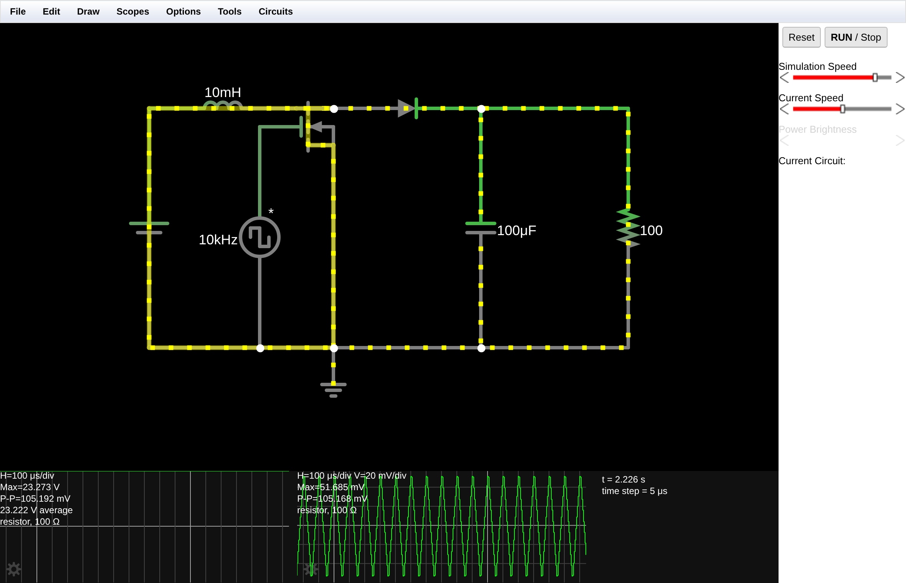
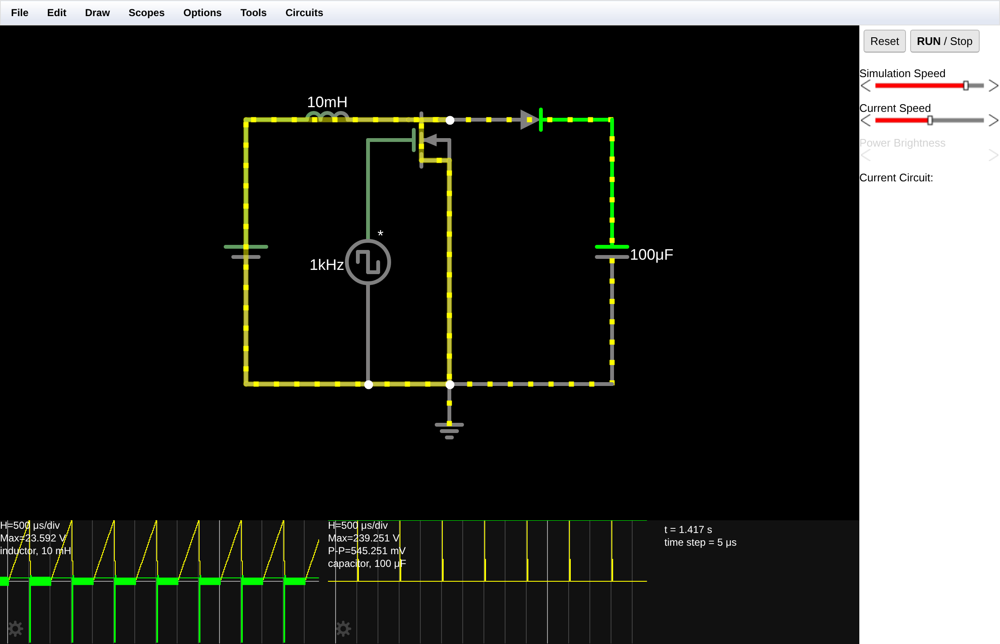

Em Modo de Condução Contínua (CCM), a tensão média de saída de um conversor Boost ideal depende apenas da tensão de entrada e da razão cíclica D do sinal PWM aplicado à chave:
Essa expressão vem do balanço de volt-segundo no indutor: em regime permanente a área de tensão positiva sobre o indutor durante a condução da chave precisa ser igual à área negativa durante o bloqueio, isto é, Vin·D·T = (Vout − Vin)·(1−D)·T. Para Vin = 12 V e D = 50 %, a saída teórica é de 24 V.
Incluindo a queda direta do diodo (VD ≈ 0,7 V), que é a perda dominante neste circuito, o mesmo balanço de volt-segundo fornece um modelo mais realista que será comparado com as medições:
A ondulação (ripple) de tensão na saída é dada pela carga que o capacitor entrega sozinho à carga durante o intervalo de condução da chave:
O circuito foi montado a partir de uma área de trabalho limpa (Circuits > Blank Circuit), com passo de cálculo de 5 µs. Todas as medidas foram lidas diretamente dos osciloscópios do simulador, em regime permanente (t > 2 s de tempo simulado).
| Componente | Caminho no menu Draw | Configuração |
|---|---|---|
| Fonte de tensão DC | Inputs and Sources > Add Voltage Source (2-terminal) | Waveform DC · 12 V · terminal negativo no terra |
| Indutor | Passive Components > Add Inductor | 10 mH, em série com o polo positivo da fonte |
| Chave controlada | Active Components > Add MOSFET (N-Channel) | Dreno após o indutor · Fonte no terra · Vth = 1,5 V |
| Gerador PWM | Inputs and Sources > Add Square Wave Source | Square · 1 kHz · Max Voltage 10 V · DC Offset 0 V · Duty Cycle 50 % |
| Diodo | Passive Components > Add Diode | Anodo no nó indutor/dreno · catodo para a saída |
| Capacitor de filtro | Passive Components > Add Capacitor | 100 µF, entre o catodo do diodo e o terra |
| Resistor de carga | Passive Components > Add Resistor | 100 Ω, em paralelo com o capacitor |
| Terra (GND) | Inputs and Sources > Add Ground | Referência de 0 V |
Foram adicionadas pontas de prova no indutor, no resistor de carga e no gerador PWM (botão direito > View in New Scope), resultando em três osciloscópios. No osciloscópio da carga foram habilitadas as leituras de valor médio e pico a pico, que fornecem diretamente Vout e ΔVout.

| Etapa | PWM no gate | MOSFET | Diodo | Indutor | Capacitor | Carga é alimentada por |
|---|---|---|---|---|---|---|
| 1 — acumulação (duração D·T) | Nível alto (+10 V) | Conduz (curto para o terra) | Reversamente polarizado (bloqueado) | vL = +Vin corrente cresce linearmente (armazena energia magnética) | Descarrega | Somente o capacitor |
| 2 — transferência (duração (1−D)·T) | Nível baixo (−10 V) | Bloqueado | Conduz | vL = Vin − Vout − VD < 0 corrente decresce (campo colapsa e a tensão se soma à fonte) | Recarrega | Fonte + indutor em série |
É a soma da tensão da fonte com a tensão induzida no indutor durante a Etapa 2 que produz a elevação: por isso a saída pode ultrapassar a tensão de entrada, e por isso a razão cíclica controla diretamente o ganho. Esse comportamento foi confirmado no osciloscópio do indutor, onde a tensão alterna entre +12 V (Etapa 1) e um patamar negativo (Etapa 2).
A primeira montagem usou o MOSFET com os parâmetros de fábrica do Falstad (Vth = 1,5 V, β = 0,02 A/V²). Nessas condições o resultado em D = 75 % ficou muito distante do previsto, e a investigação mostrou o motivo:
| Parâmetro do MOSFET padrão | Cálculo | Valor |
|---|---|---|
| Resistência de condução RDS(on) | 1 / [β·(VGS − Vth)] = 1 / [0,02 × 8,5] | 5,88 Ω |
| Corrente de saturação ID(sat) | (β/2)·(VGS − Vth)² = 0,01 × 8,5² | 0,72 A |
| Corrente exigida pelo circuito em D = 75 % | Vout / [R·(1−D)] = 48 / (100 × 0,25) | 1,92 A |
Ou seja: o MOSFET padrão do simulador satura em 0,72 A, menos da metade da corrente que o conversor precisaria conduzir em D = 75 %. Ele deixa de funcionar como chave e passa a se comportar como limitador de corrente, derrubando a saída. Um RDS(on) de 5,88 Ω também não representa nenhum MOSFET de potência real — um IRFZ44N, por exemplo, tem cerca de 17 mΩ.
Por isso o relatório apresenta dois circuitos, ambos entregues como link:
A propriedade Duty Cycle da fonte de onda quadrada foi editada nos três valores pedidos. Para cada um, aguardou-se a estabilização da tensão na carga e registraram-se o valor médio e o pico a pico.
| Razão cíclica (D) | Vout teórico = 12/(1−D) | Vout medido Circuito 1 (MOSFET de potência) | Ripple ΔVout Circuito 1 | Vout medido Circuito 2 (MOSFET padrão) | Ripple ΔVout Circuito 2 |
|---|---|---|---|---|---|
| 25 % (0,25) | 16,0 V | 15,233 V (−4,8 %) | 504 mV | 14,810 V (−7,4 %) | 470 mV |
| 50 % (0,50) | 24,0 V | 23,097 V (−3,8 %) | 1,167 V | 20,063 V (−16,4 %) | 998 mV |
| 75 % (0,75) | 48,0 V | 46,868 V (−2,4 %) | 3,488 V | 16,488 V (−65,7 %) | 1,228 V |
Aplicando o modelo que desconta a queda direta do diodo, Vout = 12/(1−D) − 0,7, chega-se a uma concordância quase perfeita com o Circuito 1 — o resíduo que sobra cresce com a corrente, como esperado da RDS(on) e da resistência dinâmica do diodo:
| D | Ideal: 12/(1−D) | Com queda do diodo: 12/(1−D) − 0,7 | Medido (Circuito 1) | Resíduo | Ripple calculado Iout·D/(C·f) | Ripple medido |
|---|---|---|---|---|---|---|
| 25 % | 16,00 V | 15,30 V | 15,233 V | 0,07 V | 381 mV | 504 mV |
| 50 % | 24,00 V | 23,30 V | 23,097 V | 0,20 V | 1,155 V | 1,167 V |
| 75 % | 48,00 V | 47,30 V | 46,868 V | 0,43 V | 3,515 V | 3,488 V |
O modelo de ripple acerta dentro de 1 % em D = 50 % e 75 %. Em D = 25 % a diferença é maior (504 mV medidos contra 381 mV calculados) porque, com a chave fechada por pouco tempo, a ondulação da corrente no indutor passa a contribuir de forma significativa para a ondulação do capacitor — efeito que a fórmula simplificada não considera.



A medição da tensão no indutor durante a Etapa 1 mostra diretamente quanto o MOSFET está "roubando" da fonte. Num conversor ideal esse valor deveria ser exatamente Vin = 12 V:
| Circuito | D | vL medido na Etapa 1 | Queda sobre o MOSFET | Situação |
|---|---|---|---|---|
| Circuito 2 (padrão) | 25 % | 11,611 V | 0,389 V | Região linear |
| Circuito 2 (padrão) | 50 % | 10,885 V | 1,115 V | Região linear, perda já relevante |
| Circuito 2 (padrão) | 75 % | 7,106 V | 4,894 V | Saturado — vira fonte de corrente |
| Circuito 1 (potência) | 50 % | 11,996 V | 0,004 V | Chave praticamente ideal |
Mantendo L = 10 mH, C = 100 µF e D = 50 %, a frequência do PWM foi alterada de 1 kHz para 10 kHz. Para enxergar a ondulação foi adicionado um segundo osciloscópio na carga com acoplamento AC, que remove o nível DC de 23 V e amplia a escala vertical.
| Frequência de chaveamento | Vout médio | Ripple medido (pico a pico) | Ripple calculado | Escala do osciloscópio AC |
|---|---|---|---|---|
| 1 kHz | 23,097 V | 1,164 V | 1,155 V | 200 mV/div |
| 10 kHz | 23,222 V | 105 mV | 116 mV | 20 mV/div |
| Redução medida: 11,1 × — a tensão média praticamente não mudou (+0,5 %). | ||||


O resistor de carga foi removido, mantendo o chaveamento ativo em D = 50 %. A tensão no capacitor foi monitorada ao longo do tempo:
| Tempo de simulação | Vout (tensão no capacitor) | Ripple | Comportamento |
|---|---|---|---|
| 151 ms | 91,5 V | 1,579 V | Crescimento monotônico, sem estabilização |
| 388 ms | 133,7 V | 1,028 V | |
| 1,417 s | 239,3 V | 545 mV |

Porque a fórmula Vout = Vin/(1−D) descreve um conversor ideal e sem perdas: chave com resistência zero, diodo sem queda direta, indutor sem resistência série e capacitor sem ESR. No circuito simulado cada um desses elementos consome parte da tensão. Pelas medições, as causas em ordem de importância são:
Em resumo: como o conversor não pode criar energia, vale Vout·Iout = η·Vin·Iin com η < 1. Toda perda aparece como tensão faltando na saída.
A ondulação diminui praticamente na mesma proporção — medimos uma queda de 1,164 V para 105 mV, ou seja, um fator de 11,1 × para um aumento de 10 × na frequência (seção 7.1). A tensão média praticamente não muda (23,097 V → 23,222 V), porque o valor médio depende de D, não de fs.
A razão é direta: durante a Etapa 1 o diodo está bloqueado e só o capacitor alimenta a carga. Ele perde a carga ΔQ = Iout·D·T, e a queda de tensão correspondente é
Dobrar a frequência significa metade do tempo descarregando o capacitor e, portanto, metade da ondulação. Pelo mesmo motivo a ondulação de corrente no indutor, ΔIL = Vin·D/(L·fs), também cai 10 ×, o que afasta o conversor da fronteira do modo descontínuo e melhora a regulação.
Consequência prática. É exatamente por isso que fontes chaveadas comerciais operam entre dezenas e centenas de kHz: para uma mesma ondulação admissível, o aumento da frequência permite reduzir L e C na mesma proporção, barateando e miniaturizando a fonte. O limite é o compromisso com as perdas de comutação, que crescem linearmente com fs (cada transição dissipa energia no MOSFET e no diodo), com o aquecimento do núcleo e com a interferência eletromagnética gerada pelos dv/dt e di/dt mais rápidos.
A tensão de saída sobe indefinidamente, sem encontrar ponto de equilíbrio. Na simulação, com D = 50 %, ela atingiu 91,5 V em 151 ms, 133,7 V em 388 ms e 239,3 V em 1,4 s, continuando a crescer (seção 7.2) — contra os 23 V do mesmo circuito com carga.
O motivo está no balanço de energia. A cada ciclo o indutor acumula energia na Etapa 1 e a entrega ao capacitor na Etapa 2. Com carga, o resistor drena essa energia e o sistema encontra o equilíbrio em que a potência entregue é igual à consumida — é esse equilíbrio que fixa Vout em 23 V. Sem carga, não existe caminho de descarga: a energia só se acumula no capacitor, e como E = ½·C·V², a tensão cresce ciclo após ciclo.
Note que a taxa de crescimento vai desacelerando (91 V em 0,15 s, mas apenas mais 106 V em todo o segundo seguinte). Isso acontece porque, com Vout cada vez maior, a tensão reversa sobre o indutor na Etapa 2 (Vin − Vout) também cresce, descarregando-o mais rápido e reduzindo a energia transferida por ciclo. A ondulação medida cai junto, de 1,579 V para 545 mV, pelo mesmo motivo.
Consequências práticas — por que isso é perigoso.
Os dois links abrem o circuito já montado e em execução, com os três osciloscópios configurados. Para repetir os experimentos, basta clicar com o botão direito na fonte de onda quadrada, escolher Edit e alterar o Duty Cycle ou a Frequency.
O conversor Boost foi montado e simulado com êxito, e o comportamento previsto pela teoria foi confirmado quantitativamente. Com o MOSFET de potência, as tensões medidas (15,2 / 23,1 / 46,9 V) ficaram a menos de 5 % dos valores ideais (16 / 24 / 48 V), e todo esse desvio é explicado pela queda direta do diodo: o modelo Vout = Vin/(1−D) − VD deixa um resíduo de apenas 0,07 a 0,43 V.
Os osciloscópios evidenciaram as duas etapas de operação: a rampa de corrente crescendo no indutor com a chave fechada e decrescendo com a chave aberta, o dente de serra da tensão de saída e a relação direta entre a largura do pulso de PWM e a tensão entregue à carga.
Os experimentos complementares reforçaram dois conceitos centrais de projeto de fontes chaveadas. Primeiro, que a ondulação é inversamente proporcional à frequência de chaveamento — medimos 1,164 V a 1 kHz contra 105 mV a 10 kHz, o que justifica as altas frequências das fontes comerciais. Segundo, que o conversor Boost não tolera operar sem carga em malha aberta: a saída atingiu 239 V e continuava subindo, condição que destruiria o capacitor e o MOSFET num circuito real.
Por fim, a investigação do MOSFET mostrou que a escolha da chave não é um detalhe: o componente padrão do simulador, com RDS(on) de 5,88 Ω e saturação em 0,72 A, impede o conversor de atingir razões cíclicas elevadas, derrubando a saída de 48 V para 16,5 V em D = 75 %. No Boost a corrente da chave cresce com 1/(1−D)², e é essa corrente — não a tensão — que normalmente limita o ganho máximo alcançável na prática.
Texto importável pelo Falstad (File > Import from Text):
$ 1 0.000005 60 50 50 50 v 192 400 192 192 0 0 40 12 0 0 0.5 l 192 192 320 192 0 0.01 0 w 320 192 352 192 0 f 288 208 352 208 0 1.5 5 d 352 192 480 192 2 default c 480 192 480 400 0 0.0001 0 w 480 192 608 192 0 r 608 192 608 400 0 100 w 352 224 352 400 0 v 288 400 288 208 0 2 1000 10 0 0 0.5 w 192 400 288 400 0 w 288 400 352 400 0 w 352 400 480 400 0 w 480 400 608 400 0 g 352 400 352 432 0 o 1 4 0 12803 20 0.5 0 2 1 3 o 7 4 0 4338179 20 0.5 1 2 7 3 o 9 4 0 4610 20 0.5 2 1
$ 1 0.000005 60 50 50 50 v 192 400 192 192 0 0 40 12 0 0 0.5 l 192 192 320 192 0 0.01 0 w 320 192 352 192 0 f 288 208 352 208 0 1.5 0.02 d 352 192 480 192 2 default c 480 192 480 400 0 0.0001 0 w 480 192 608 192 0 r 608 192 608 400 0 100 w 352 224 352 400 0 v 288 400 288 208 0 2 1000 10 0 0 0.5 w 192 400 288 400 0 w 288 400 352 400 0 w 352 400 480 400 0 w 480 400 608 400 0 g 352 400 352 432 0 o 1 4 0 12803 20 0.5 0 2 1 3 o 7 4 0 4338179 20 0.5 1 2 7 3 o 9 4 0 4610 20 0.5 2 1